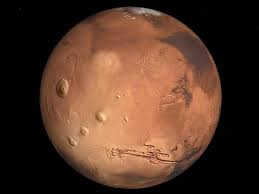

|  |
|
Marte es un planeta desértico y frío. Es la mitad del tamaño de la Tierra, y también recibe el nombre de "planeta rojo". Es rojo por el hierro oxidado que tiene en el suelo Como la Tierra, Marte tiene estaciones, casquetes polares, volcanes, cañones y clima. Tiene una atmósfera poco densa hecha de dióxido de carbono, nitrógeno y argón. Hay signos de antiguas inundaciones en Marte, pero ahora el agua existe principalmente en su polvo helado y sus nubes delgadas. En algunas laderas marcianas, se han encontrado pruebas de agua líquida salada. |